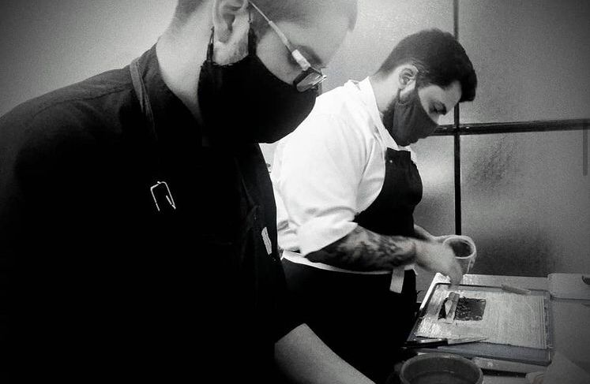

Quienes Somos
Sushi Place nació cuando amantes
de la comida japonesa decidieron
darle vida a un emprendimiento familiar
gastronómico con la excelencia,
dedicación y calidad que sólo un
buen chef conoce.
Donde el respeto por la calidad de
los platos parte de los productos
frescos que constituyen una de
sus principales virtudes.
Buscando el mejor sabor y piezas originales,
surgió la perfecta combinación
que ofrece el sushi
que elaboramos hoy en día, como
lo hacian los grandes maestros
del arte culinaria.
Nuestra gran variedad de rolls
y una opción innovadora en la alta cocina
japonesa conforman un menú
completo y exquisito para nuestros clientes.
Sushi Place, 100% Fresco y Natural.
